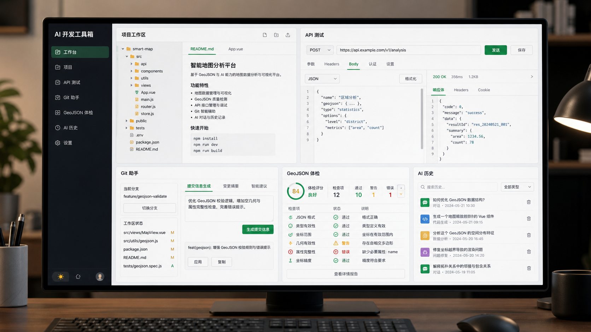

项目工作区
登记常用本地项目目录、业务标签和说明，并把 AI 历史、API 集合、Git 路径和地理体检记录关联到项目。
本地优先的开发效率工具
把项目工作区、API 调试、Git 辅助、GeoJSON 体检、AI 代码解释与生成整合到一个桌面应用中， 让常用开发动作沉淀为可复用的本地工作流。

功能模块
登记常用本地项目目录、业务标签和说明，并把 AI 历史、API 集合、Git 路径和地理体检记录关联到项目。
发送 HTTP 请求、保存请求集合、导入 OpenAPI / Swagger，并静态扫描 Spring Controller 与 fetch / axios 调用。
查看状态、日志和 diff，支持文件级暂存，并用 AI 生成变更说明与 Commit Message。
检查 Feature 数量、几何类型、坐标范围、必填属性和通用质量问题，并导出 Markdown 或 JSON 报告。
用 Prompt 模板解释代码、生成代码草稿、复制代码块，并把结果保存到统一的 AI 历史中心。
SQLite 数据库存储在本机，设置页支持备份、恢复、清理历史、模板导入导出和模型连接诊断。
推荐流程
先保存项目目录、标签和说明，后续模块会自动使用项目上下文。
在设置页选择 SiliconFlow、OpenAI、DeepSeek 或 OpenAI 兼容平台，完成连接测试。
在 API、Git、GeoJSON、AI 解释或 AI 生成模块完成具体操作。
在 AI 历史中心复用输出，把成熟 Prompt 转换为模板，并通过项目包迁移数据。
发布包
当前版本已创建 GitHub Release 标签页。安装包和便携包生成后建议上传到该 Release，便于用户从同一入口下载。
Cloudflare Pages
https://codexbox.pages.dev
main 分支推送后自动发布
随站点发布到 /manual.html